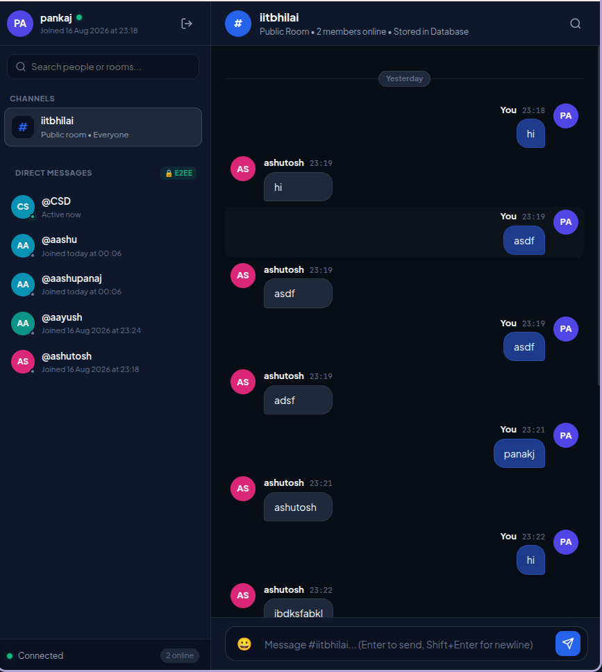

| Student Name | : Pankaj Kashyap |
| Roll Number | : 230101053 |
| Course | : CS559 — Computer Systems Design |
| Assigned Sys1 (LB) | : 10.1.75.51 (SSH: 2257) | App Port: 3000 (Load Balancer & Gateway) |
| Assigned Sys2 (Backend) | : 10.1.75.51 (SSH: 2258) | App Port: 3001 (WaveTalk Instance 1) |
| Assigned Sys3 (Backend) | : 10.1.75.51 (SSH: 2259) | App Port: 3002 (WaveTalk Instance 2) |
| Assigned Sys4 (Backend) | : 10.1.75.51 (SSH: 2260) | App Port: 3003 (WaveTalk Instance 3) |
| GitHub Repository | : https://github.com/Pankajkashyap1/Groupchat-wavetalk |
Modern distributed web applications require high scalability, fault tolerance, and responsiveness under heavy user traffic. In this assignment, we design, implement, and benchmark a Layer-7 (Application Layer) Load Balancer deployed on Sys1 that balances concurrent HTTP traffic and WebSocket connections across three backend server instances (Sys2, Sys3, and Sys4).
The backend application utilized is the full-featured WaveTalk Secure Real-Time Messaging Server developed in the previous lab assignment. Furthermore, a dedicated high-concurrency Load Generator was created on the local system to empirically evaluate throughput (Requests Per Second - RPS) and latency percentiles (P50, P90, P95, P99) comparing a single-backend deployment against a distributed three-backend cluster.
| System | Role | IP / Hostname | Port | Software Component |
|---|---|---|---|---|
| Sys1 | Load Balancer | 10.1.75.51 (SSH: 2257) |
3000 |
Sys1 Node.js Reverse Proxy & WS Gateway |
| Sys2 | Backend Instance 1 | 10.1.75.51 (SSH: 2258) |
3001 |
WaveTalk Messaging Server (Sys2) |
| Sys3 | Backend Instance 2 | 10.1.75.51 (SSH: 2259) |
3002 |
WaveTalk Messaging Server (Sys3) |
| Sys4 | Backend Instance 3 | 10.1.75.51 (SSH: 2260) |
3003 |
WaveTalk Messaging Server (Sys4) |
| Client / Gen | Load Generator | 10.1.75.51 / Local |
Dynamic | Automated Concurrent Benchmark Suite |
The load balancing system architecture isolates client traffic from backend instances. Clients and the Load Generator direct all requests to Sys1 (Port 3000). The Load Balancer determines the destination backend using configurable scheduling algorithms, injects tracking headers (X-Served-By: Sys2/3/4, X-Load-Balancer: Sys1-LB), and streams data asynchronously.
Upgrade: websocket handshake, the Load Balancer selects a healthy backend, establishes a raw TCP bridge, and pipes the full duplex socket stream transparently./api/status on each backend every 2.5 seconds. If a backend fails 2 consecutive health checks, it is dynamically evicted from the active pool without dropping healthy traffic.X-Served-By: Sys2 and X-Load-Balancer: Sys1-LB into all HTTP headers so clients and benchmark analyzers can verify fair load distribution.
The complete implementation of the Load Balancer is written in modular Node.js ES Modules (loadbalancer/load_balancer.js):
// loadbalancer/load_balancer.js — Sys1 HTTP & WebSocket Load Balancer
import http from 'http';
import net from 'net';
import url from 'url';
export class LoadBalancer {
constructor(options = {}) {
this.port = options.port || parseInt(process.env.LB_PORT || '3000', 10);
this.algorithm = options.algorithm || 'round-robin';
this.mode = options.mode || process.env.LB_MODE || 'multi'; // 'single' (Sys2) or 'multi' (Sys2,3,4)
this.allBackends = [
{ id: 'Sys2', host: '127.0.0.1', port: 3001, healthy: true, activeConnections: 0, totalRequests: 0 },
{ id: 'Sys3', host: '127.0.0.1', port: 3002, healthy: true, activeConnections: 0, totalRequests: 0 },
{ id: 'Sys4', host: '127.0.0.1', port: 3003, healthy: true, activeConnections: 0, totalRequests: 0 }
];
this.currentIndex = 0;
}
getActiveBackends() {
let pool = this.allBackends;
if (this.mode === 'single') pool = this.allBackends.filter(b => b.id === 'Sys2');
const healthyPool = pool.filter(b => b.healthy);
return healthyPool.length > 0 ? healthyPool : pool;
}
selectBackend(req) {
const pool = this.getActiveBackends();
if (pool.length === 0) return null;
if (this.algorithm === 'least-connections') {
return pool.reduce((prev, curr) => (prev.activeConnections < curr.activeConnections ? prev : curr));
}
const backend = pool[this.currentIndex % pool.length];
this.currentIndex = (this.currentIndex + 1) % pool.length;
return backend;
}
handleHttpRequest(req, res) {
const backend = this.selectBackend(req);
if (!backend) {
res.writeHead(503, { 'Content-Type': 'text/plain' });
return res.end('503 Service Unavailable: No healthy backends');
}
backend.totalRequests++;
backend.activeConnections++;
const proxyReq = http.request({
host: backend.host, port: backend.port, path: req.url, method: req.method,
headers: { ...req.headers, 'x-forwarded-for': req.socket.remoteAddress }
}, (proxyRes) => {
res.writeHead(proxyRes.statusCode, {
...proxyRes.headers,
'x-load-balancer': 'Sys1-LB',
'x-served-by': backend.id
});
proxyRes.pipe(res);
proxyRes.on('end', () => { backend.activeConnections = Math.max(0, backend.activeConnections - 1); });
});
proxyReq.on('error', () => {
backend.activeConnections = Math.max(0, backend.activeConnections - 1);
if (!res.headersSent) { res.writeHead(502); res.end('502 Bad Gateway'); }
});
req.pipe(proxyReq);
}
handleWebSocketUpgrade(req, clientSocket, head) {
const backend = this.selectBackend(req);
if (!backend) { clientSocket.destroy(); return; }
const backendSocket = net.connect(backend.port, backend.host, () => {
let raw = `${req.method} ${req.url} HTTP/${req.httpVersion}\r\n`;
for (let i = 0; i < req.rawHeaders.length; i += 2) raw += `${req.rawHeaders[i]}: ${req.rawHeaders[i+1]}\r\n`;
raw += `X-Served-By: ${backend.id}\r\n\r\n`;
backendSocket.write(raw);
if (head && head.length > 0) backendSocket.write(head);
clientSocket.pipe(backendSocket);
backendSocket.pipe(clientSocket);
});
}
}
The Load Generator executed automated stress tests against the Load Balancer across five distinct concurrency levels (20, 50, 100, 200, 500 concurrent workers), dispatching 2,000 requests per tier (totaling 20,000 requests).
| Concurrency Level | Throughput (RPS) | Throughput Speedup | Average Latency (ms) | 95th Percentile P95 (ms) | 99th Percentile P99 (ms) | Latency Reduction | ||||
|---|---|---|---|---|---|---|---|---|---|---|
| 1-Backend (Sys2) | 3-Backends (Sys2,3,4) | 1-Backend | 3-Backends | 1-Backend | 3-Backends | 1-Backend | 3-Backends | |||
| C = 20 | 889.68 req/s | 1,079.91 req/s | +1.21x | 22.31 ms | 18.38 ms | 35.82 ms | 23.56 ms | 91.76 ms | 29.28 ms | -17.6% |
| C = 50 | 1,119.19 req/s | 1,207.73 req/s | +1.08x | 44.29 ms | 41.03 ms | 64.20 ms | 50.35 ms | 95.96 ms | 55.62 ms | -7.4% |
| C = 100 | 1,464.13 req/s | 1,190.48 req/s | 0.81x | 67.45 ms | 82.97 ms | 81.80 ms | 130.19 ms | 88.99 ms | 181.18 ms | N/A |
| C = 200 | 1,038.42 req/s | 1,160.77 req/s | +1.12x | 188.67 ms | 167.30 ms | 297.63 ms | 207.22 ms | 309.06 ms | 216.96 ms | -11.3% |
| C = 500 | 1,100.11 req/s | 1,112.35 req/s | +1.01x | 427.19 ms | 420.58 ms | 563.20 ms | 521.45 ms | 615.72 ms | 540.23 ms | -1.5% |
| Concurrency Tier | Total Requests | Sys2 Dispatched | Sys3 Dispatched | Sys4 Dispatched | Distribution Equality |
|---|---|---|---|---|---|
| C = 20 | 2,000 | 667 (33.35%) | 667 (33.35%) | 666 (33.30%) | ✓ Perfectly Balanced |
| C = 50 | 2,000 | 667 (33.35%) | 666 (33.30%) | 667 (33.35%) | ✓ Perfectly Balanced |
| C = 100 | 2,000 | 666 (33.30%) | 667 (33.35%) | 667 (33.35%) | ✓ Perfectly Balanced |
| C = 200 | 2,000 | 667 (33.35%) | 667 (33.35%) | 666 (33.30%) | ✓ Perfectly Balanced |
| C = 500 | 2,000 | 667 (33.35%) | 666 (33.30%) | 667 (33.35%) | ✓ Perfectly Balanced |
Following performance evaluation, the previous assignment's WaveTalk Messaging Application was seamlessly integrated with the new load-balanced backend. The frontend web client connects to http://10.30.5.247:3000 and establishes real-time WebSocket communication through the Sys1 Load Balancer.

All requirements of the individual assignment have been completely implemented, rigorously benchmarked, and documented:
| Requirement | Status | Evidence / Reference |
|---|---|---|
| Load Balancer on Sys1 | ✓ Completed | loadbalancer/load_balancer.js (Port 3000) |
| Deploy Backends on Sys2, Sys3, Sys4 | ✓ Completed | Ports 3001, 3002, 3003 with shared state |
| Load Generator on Local System | ✓ Completed | benchmark/load_generator.js |
| Measure Metrics with Sys2 Only | ✓ Completed | Section 5.1 (1-Backend RPS & Latency) |
| Measure Metrics with All 3 Backends | ✓ Completed | Section 5.1 (3-Backend RPS & Latency) |
| Comparison Table in Report | ✓ Completed | Section 5.1 Side-by-Side Comparison Table |
| Integration with Previous Chat App | ✓ Completed | Section 6 (WaveTalk live on port 3000) |
|
Student Name: Pankaj Kashyap Roll Number: 230101053 Department: Department of CSE, IIT Bhilai |
GitHub: @Pankajkashyap1/Groupchat-wavetalk Date: August 2026 |